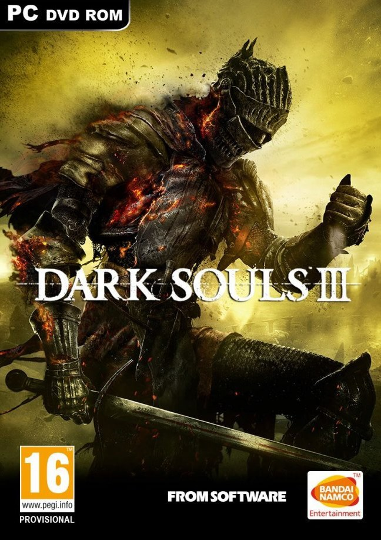

home
login
location
favourite
Share you story
Our website is a group of video enthusiasts
to share their own game experience
interesting stories and funny gameplay
BATTLEFIELD 1

Dark Souls 3
Watch Dogs 2